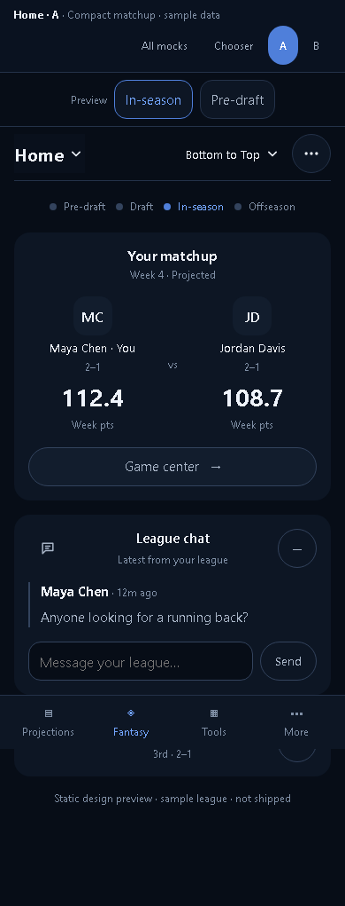
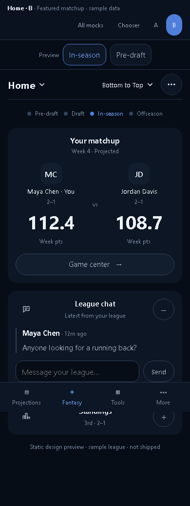

Page 1 · Home
A calmer Fantasy home.
Open either option. Switch between in-season and pre-draft.

A · Compact matchup
Matchup with each manager’s record. Draft context appears only pre-draft.
Open A →
B · Featured matchup
Larger scoreboard with each manager’s record. Draft context appears only pre-draft.
Open B →Sample data · design options · not shipped